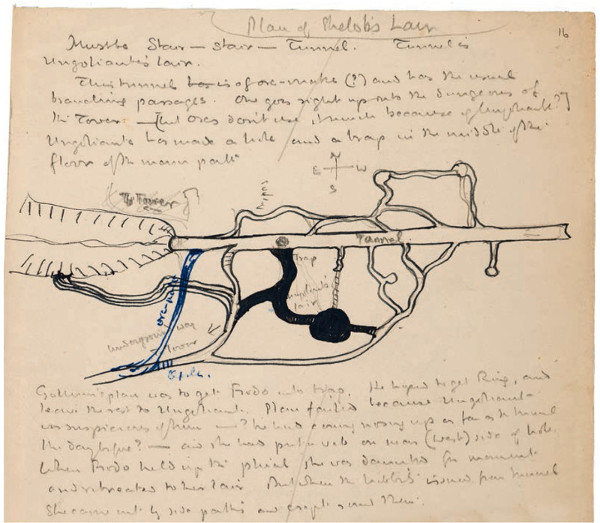
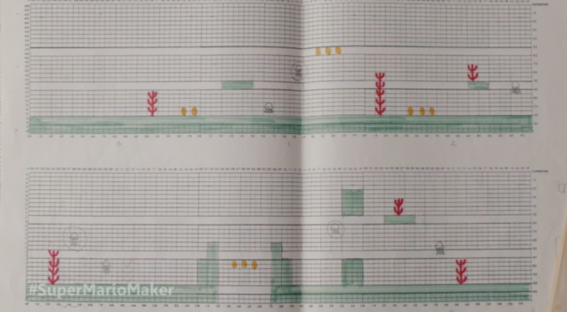
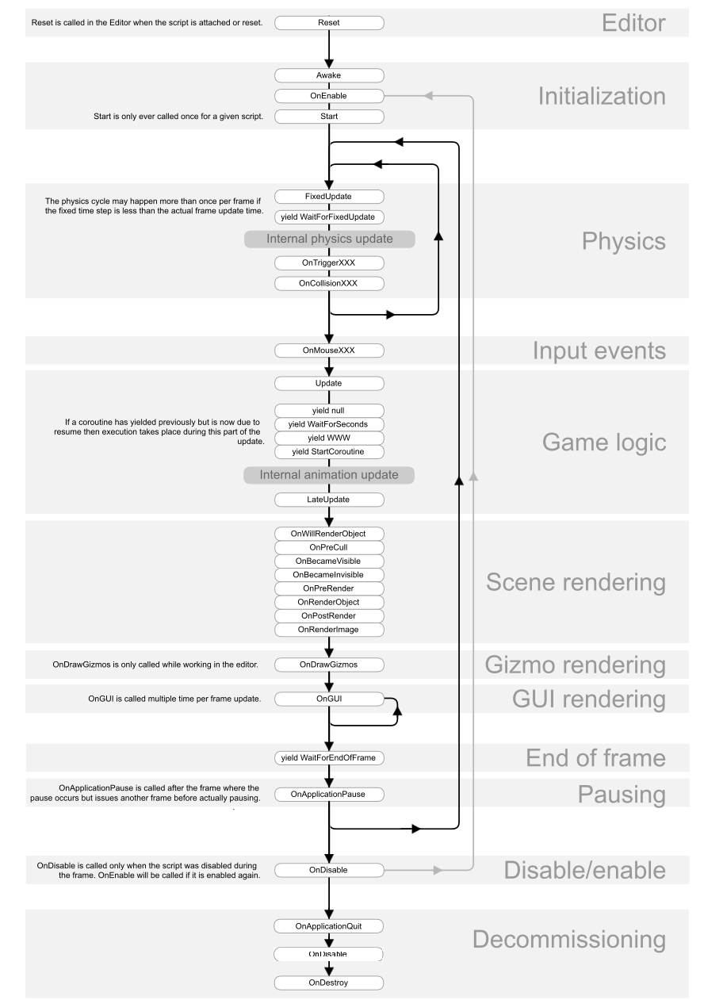
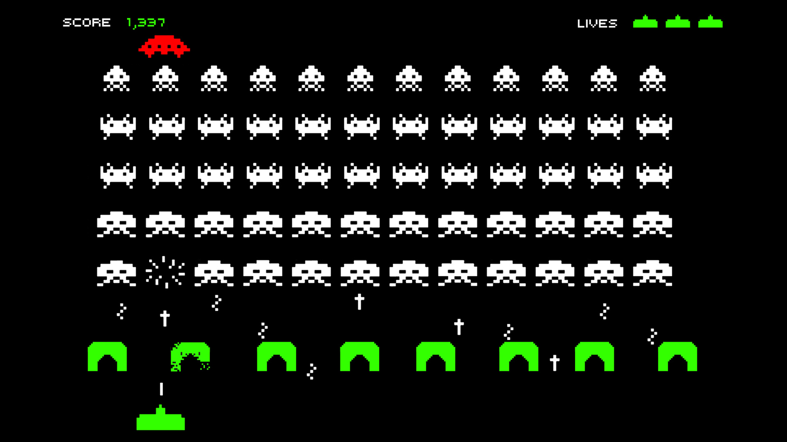
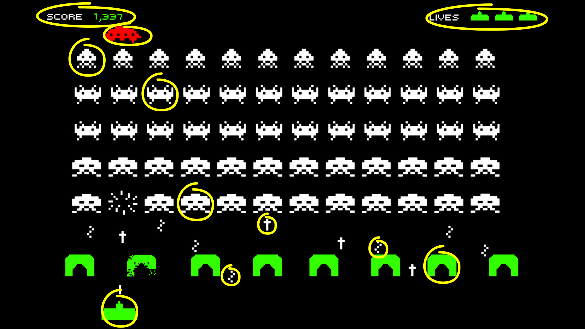
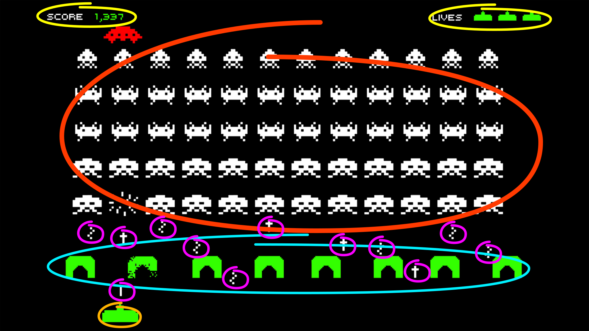
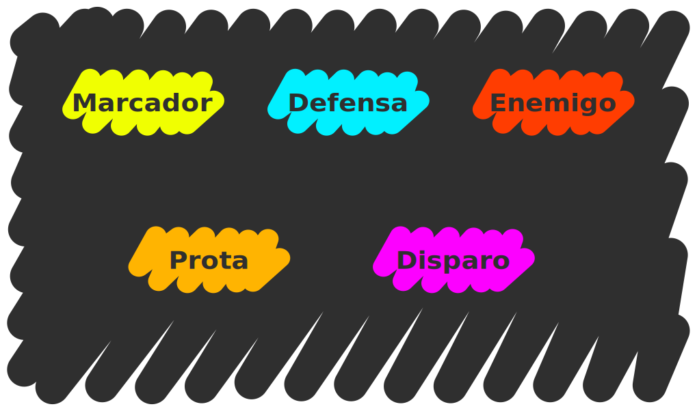
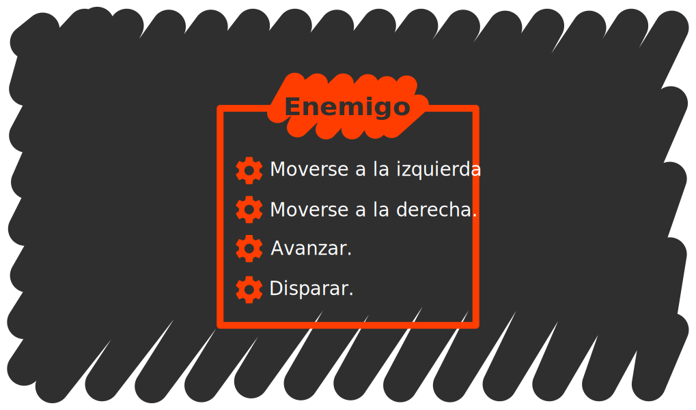
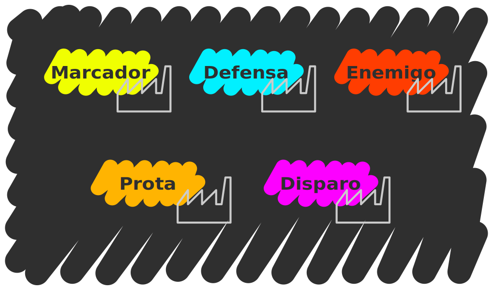
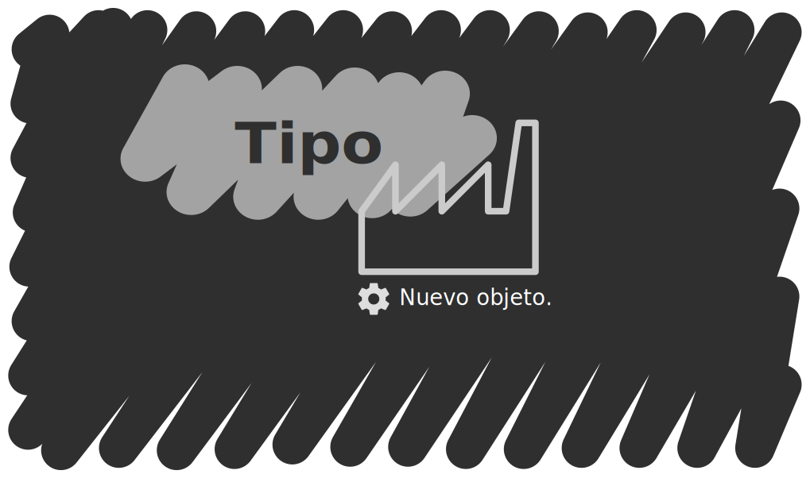

Modelado orientado a objetos
Carlos León
cleon@ucm.es
Modelado de problemas
Programar es expresar un problema en un lenguaje de programación dado. Modelar representa un paso intermedio en el que se capturan y organizan los aspectos importantes de un problema
El modelado de un problema es independiente del lenguaje de programación que se elija pero el lenguaje seleccionado condiciona la facilidad con la que podemos codificar el modelo
Muchas actividades creativas incluyen modelos intermedios entre la realidad y su expresión en el medio final

Figura 1: Una página del story board de la serie de animación de Batman
Los storyboard se utilizan para planificar las secuencias de acción. Capturan los momentos clave de la secuencia
Este mapa muestra el paso de "Ella-Laraña", usado para mantener la coherencia del escenario descrito

Figura 2: Notas de Tolkien para la elaboración del Señor de los Anillos
Un diseño de un mapa del videojuego Mario. Las herramientas digitales han permitido la automatización de modelos en software

Figura 3: Mapa del video juego Mario en papel cuadriculado
El diagrama de flujo de cómo se llaman las distintas funciones de un script de Unity

Figura 4: Diagrama de flujo del ciclo de vida de un script en Unity
La programación orientada a objetos es una técnica de modelado de problemas en la que se pone especial énfasis a dos conceptos: objetos y paso de mensajes
Programación orientada a objetos
Objetos
Los objetos son representaciones de los aspectos de un problema
- Desempeñan un rol solamente
- Exponen un conjunto de funcionalidad concreta: la API
- Ocultan cómo realizan esa funcionalidad
Paso de mensajes
Los mensajes son peticiones de acción de un objeto a otro
- Parten de un objeto remitente…
- … hacia un objeto destinatario
- Codifican qué funcionalidad de la API se precisa
Modelado orientado a objetos
La definición de objetos y las interacciones entre los mismos modelan el problema
Vamos a modelar informalmente el video juego Space Invaders

Figura 5: Captura de pantalla del video juego space invaders donde se aprecian naves enemigas, la nave amiga, marcadores de vidas y puntuación, proyectiles amigos y enemigos y las defensas de la nave
Identificando objetos
Una técnica para identificar objetos es pensar en poner nombres

Figura 6: Captura de Space Invaders donde se distinguen los objetos
Algunos objetos: nave amiga, enemigo 1, enemigo 2, enemigo 3, disparo amigo, disparo enemigo 1, disparo enemigo 2, defensa 1, defensa 2, marcador de vidas, marcador de puntuación
Tipos de objetos e instancias
Queda claro de un vistazo que muchos objetos concretos pertenecen a familias o tipos de objetos
Conviene recordar que también se los llama clases
Los tipos de objetos especifican propiedades y comportamientos comunes a todos ellos aunque individualmente sean distintos

Figura 7: Captura de Space Invaders donde se distinguen los distintos tipos de objetos: marcadores, defensas, enemigos, protagonista y disparos
Los valores de un tipo son cada uno de los objetos individuales
El enemigo especial, así como cada uno de los otros enemigos será un valor distinto del tipo enemigo
Cuando utilizamos la terminología de clases, los valores se convierten en instancias de la clase
En los modelos de objetos es más conveniente trabajar con tipos de objetos
marcador, defensa, enemigo, protagonista y disparo 
Interfaces (API) y métodos
Vamos a tratar de determinar la API de nuestros tipos de objetos. Para eso nos guiarán las interacciones propias del juego
Un ejemplo: los enemigos se mueven todos juntos hacia un lado, avanzan una línea y se mueven hacia el otro lado mientras disparan aleatoriamente
Vamos a buscar verbos esta vez: mover, avanzar y disparar
Para poder implementar el comportamiento de los enemigos, estos tienen que poder moverse hacia los lados, avanzar y disparar
Así, tendrán que permitir que les envíen mensajes pidiendo una de estas operaciones
A las cosas que puede hacer un objeto se las denomina métodos
izquierda, moverse a la derecha, avanzar y disparar. 
Estado y atributos
Los objetos no sólo pueden hacer cosas sino que además capturan características de las entidades a las que representan
Cada enemigo, por ejemplo, tiene un gráfico distinto, una puntuación diferente, una posición en pantalla y además recordará en qué dirección se estaba moviendo
El estado no se suele exponer de forma directa en la API
Piensa en el caso de los enemigos: incluso si estos tienen una posición, es preferible tener métodos específicos con los que manipular la posición (como "mover a la izquierda" o "mover a la derecha") en lugar de dar libre acceso a la posición
A las características de un objeto se las denomina atributos

Figura 8: Estado del enemigo mostrando: gráfico, dirección actual, posición y puntuación.
El proceso de modelado es iterativo
Al definir algunas acciones, hemos introducido nuevos nombres como posición o dirección que se convertirán en tipos de objetos con sus propios constructores
Constructores y creación de objetos
Pensemos en la interacción de disparo: cuando el jugador pulsa el botón de disparo, aparece un proyectil delante de la nave amiga que avanza hasta alcanzar la parte superior de la pantalla o colisionar con un enemigo
El proyectil no estaba ahí antes y tendrá que ser creado en el momento del disparo
Otro ejemplo, la preparación del nivel antes de jugar: aparecen 55 enemigos en pantalla, 5 filas de 11 enemigos con la siguiente configuración: 1 fila de enemigos de la especie 1, dos filas de la especie 2, 1 de la especie 3 y 1 de la especie 4
Está claro que no queremos escribir los 55 enemigos individualmente
Además, dado que todos pertenecen al tipo enemigo, queda claro que serán todos muy parecidos
Lo que necesitamos es un mecanismo de generación automática de objetos
Cada lenguaje ofrece formas distintas de crear objetos
Nosotros vamos a añadir un nuevo objeto, el contructor, cuya tarea es la de generar objetos de un tipo dado
Así, encontraremos un contructor por tipo

Figura 9: Estado del enemigo mostrando: gráfico, dirección actual, posición y puntuación
Los constructores tienen una API muy sencilla: nuevo objeto
Este método crea un nuevo objeto de un tipo dado

Figura 10: Una factoría para un tipo cualquiera con un sólo método: nuevo objeto.
Los constructores suelen permitir personalizar partes del objeto que están creando de forma que se le pueda decir algo como "crea un disparo con esta posición, este gráfico y esta dirección de avance"

Figura 11: Una factoría para un tipo cualquiera con un sólo método: nuevo objeto
Relaciones entre tipos
Cuando modelamos, surgen relaciones de forma natural
Los enemigos tienen una posición
La nave amiga crea disparos
Nuestro cerebro tiende a establecer jerarquías entre objetos creando tipos más generalistas
Por ejemplo: en vez de pensar en enemigos y protagonista por separado, es posible pensar en naves
El tipo nave reúne los métodos y atributos comunes de la nave protagonista y enemigos

Figura 12: La jerarquía entre los enemigos, la nave protagonista y el super-tipo nave
Esta jerarquía establece relaciones de herencia también llamadas relaciones "es un(a)" dado que el protagonista es una nave y el enemigo es una nave
Se dice que el tipo enemigo extiende al tipo nave añadiendo avanzar a la API, y la puntuación y la última dirección de desplazamiento al estado
La nave amiga no añade ningún método nuevo pero redefine o sobreescribe el método disparar para que dispare hacia arriba
Como hay nuevos tipos, tendremos nuevos constructores
Los viejos constructores pueden delegar parte de la creación del objeto (las partes comunes) a los nuevos

Figura 13: Cuando se pide al constructor de enemigos un enemigo, este pide al constructor de naves una nave, la personaliza para que sea un enemigo y devuelve el enemigo
De esta forma al pedir un enemigo, el constructor de enemigos pedirá una nave al constructor de naves
Tomará esa nave, la modificará para que sea un enemigo y devolverá un enemigo
OOP to me means only messaging, local retention and protection and hiding of state-process, and extreme late-binding of all things